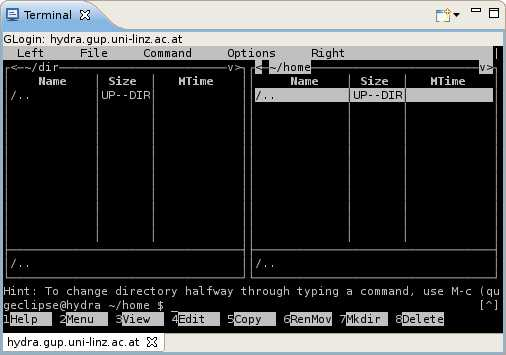

The Terminal View
g-Eclipse offers a VT100 terminal emulation supporting SSH- and glogin connections.
- SSH connections - the username and a public key or a
password are used for authentication.
- glogin connections - a grid proxy certificate is used to establish the
connection.
